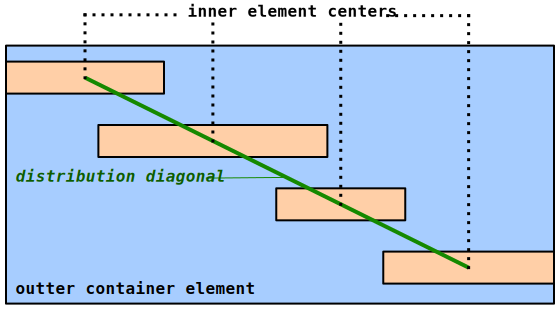
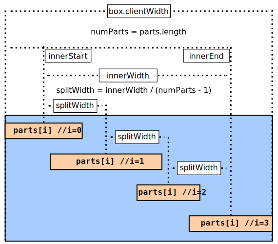
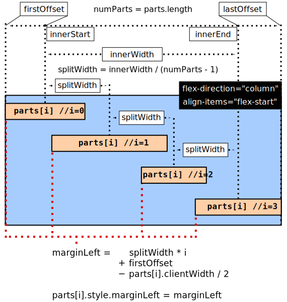

This document explains how to implement responsive diagonally distributed elements using JavaScript. To simplify things, Detect Element Resize by Sebastian Decima will be used to detect any resize on elements containing elements to be distributed. After finishing, you will have a replica of Responsive Diagonally Distributed Elements by Samuel Newhouse created from the ground-up with an understanding of how it works.
This implementaion relies on setting class names on a container element containing the elements to be diagonally distributed. The class names will set the rules for:
More options could be added to increase sophistication, but these three offer a solid starting point for understanding some of the complicating factors to consider when trying to create RDDE.
The most basic situation is aligning a set of elements on a downhill diagonal starting from the left margin.
The inner element centers are spaced equidistant horizontally and the center of each element is on the distribution diagonal. The distribution diagonal is more of a conceptual aid than something fully calculated. Only the horizontal starting and ending point of the diagonal, relative to the left margin, are needed to begin with. These are determined by setting the starting horizontal position to the horizontal center of the first element and the ending horizontal position to the horizontal center of the last element. This will create a smoother and more consistent diagonal alignment that simply going from corner to corner of the container element.
There is no need to worry about the height of the container element or the heights of the inner elements. Flexbox is used to properly distribute the elements vertically by using flex-direction: column and justify-content: space-between. This effectively automates the slope of the diagonal without having to do any additional JavaScript calculations.
Keep in mind that ALL vertical positioning is determined entirely by using flexbox. The vertical start and end of the distribution diagonal, as well as each inner element's vertical position are all automatically handled properly by simply using a flexbox with flex-direction:column and justify-content: space-between. The only thing that will need to be implemented in JavaScript is the horizontal positioning.
It's easy to say that each element's center should fall on the distribution diagonal, but how is that done? One idea is to set a separate left margin for each inner element in a way that makes all the inner elements line up diagonally. This requires a separate calculation for each inner element based on several factors...
Here is a diagram with the first three of those considerations put into relationship with each other.
box.clientWidth is necessary for calculating innerWidth. Despite the diagram's appearance, the inner elements are not automatically spaced apart so that the last element's center falls in its proper place. Instead, we have to calculate innerStart, innerEnd and innerWidth by doing the following...
// parts is an array of all the inner elements.
innerStart = parts[0].clientWidth / 2;
innerEnd = box.clientWidth - (parts[numParts - 1].clientWidth / 2);
innerWidth = innerEnd - innerStartWith innerWidth and numParts known, it's possible to calculate the horizontal spacing between element centers. This is the splitWidth and can be calculated by dividing innerWidth by one less than numParts.
splitWidth = innerWidth / (numParts - 1);Now look at how to use splitWidth with individual element widths to set the left margins...
There are several things added here that need explanation...
firstOffset: It's exactly the same value as innerStart. That may seem pointless, but it's to make explicit a meaningful contrast between itself and lastOffset.
lastOffset: NOT the same value as innerEnd. innerEnd is the distance from the left margin to where the horizontal center of the last element will be. lastOffset is half the width of the last element while firstOffset is half the width of the first element. This becomes more important in future examples.
align-items="flex-start": This is critical. Since the outer container is a flex box, the default alignment is "stretch". Using that default alignment would prevent properly using left margins as a method for aligning items diagonally. By setting the alignment to flex-start, all the items will line up on the left side of the outer container. Then, the left margins of each element can be set to push them away from the left side as needed.
Now on to the marginLeft calculations...
splitWidth * i: One splitWidth worth of distance needs to be added for each inner element so multiplying by an index counter works well here.
+ firstOffset: Adding firstOffset pushes each use of splitWidth over so the splitWidth distribution starts where it's supposed to (center of the first element).
- parts[i].clientWidth / 2: This is where each individual element width is taken into account. Even if the elements are different widths, this maintains every element's center position on the distribution diagonal.
In summary, the equivalent JavaScript so far would be...
// box is the container element for the parts
box.style.display = "flex";
box.style.flexDirection = "column";
box.style.justifyContent = "space-between";
box.style.alignItems = "flex-start";
var parts = box.children;
var numParts = parts.length
var firstOffset = parts[0].clientWidth / 2;
var lastOffset = parts[numParts - 1].clientWidth / 2;
var innerStart = firstOffset;
var innerEnd = box.clientWidth - lastOffset;
var innerWidth = innerEnd - innerStart;
var splitWidth = innerWidth / (numParts - 1);
// It's safe to skip i=0
for (let i = 1; i < numParts; i++) {
let marginLeft = splitWidth * i + firstOffset - parts[i].clientWidth / 2;
parts[i].style.marginLeft = marginLeft + "px";
}Notice the loop starts at i=1. It's unnecessary to calculate i=0 because it will always result in a zero left margin. Setting a zero left margin is the same as not setting a left margin since flex-start alignment is being used.